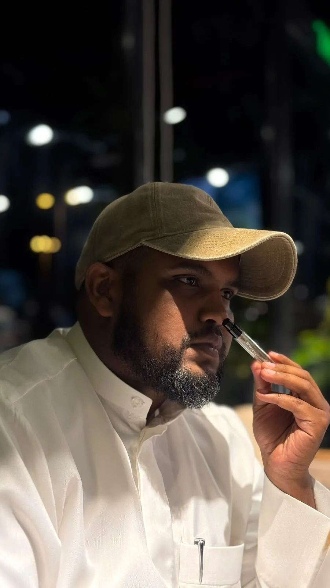
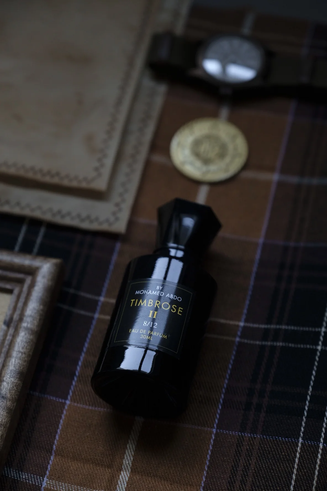
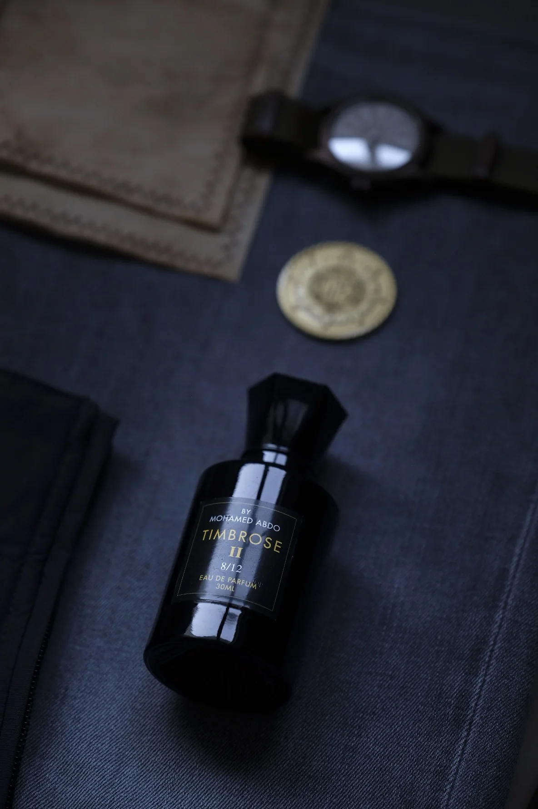
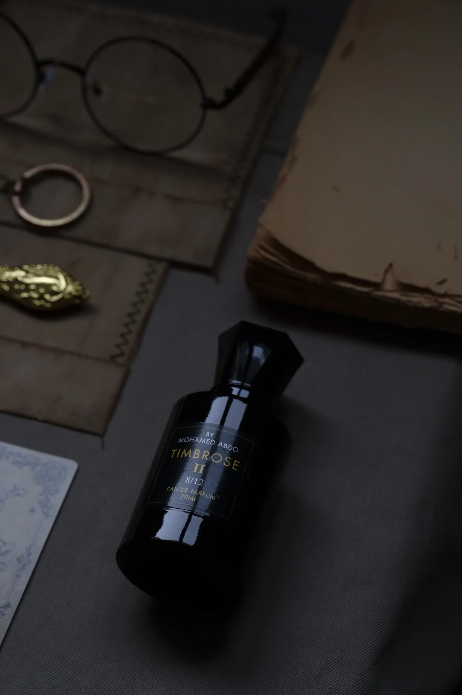
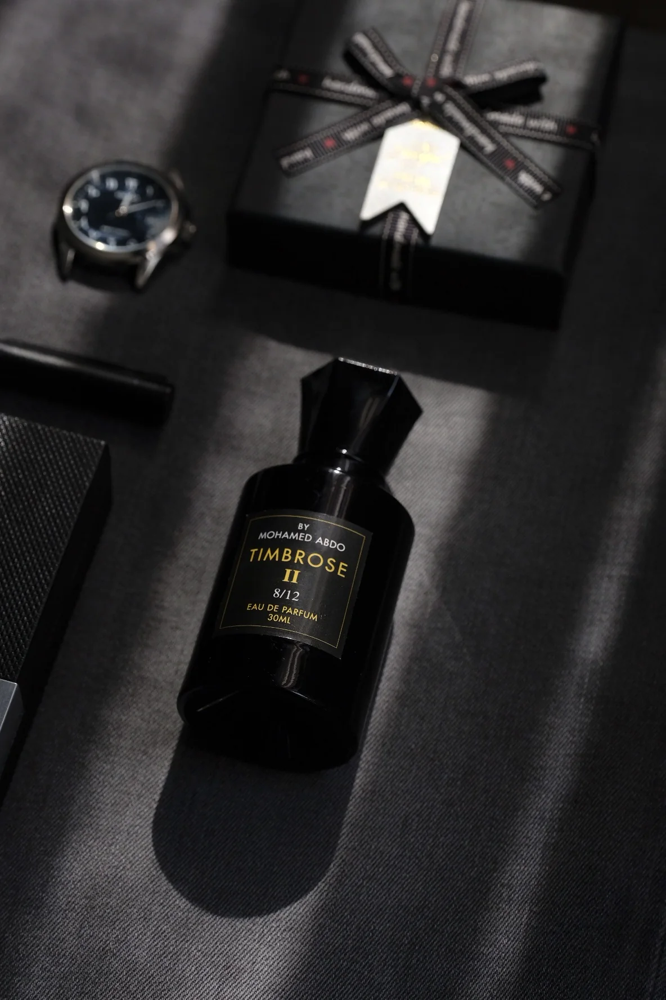
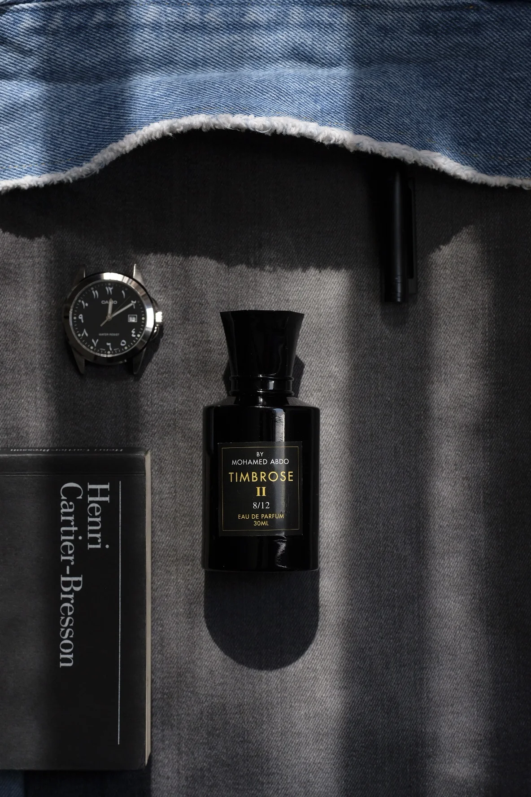
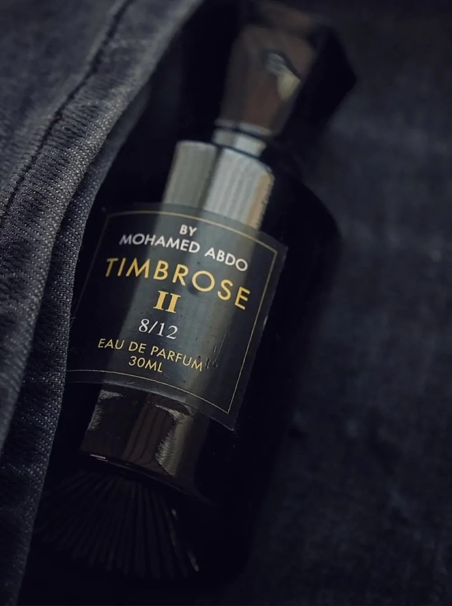

محمد عبده
Mohamed Abdoمصمم عطور مستقل · مؤسس مايدي هاوس
مصمم عطور صومالي، تركيباته مبتكرة بطابع كلاسيكي. أسّس مايدي هاوس في مقديشو ليحمل العطر الصومالي إلى العالم.
تؤمن الدار بأن العطر فنٌّ قبل أن يكون منتجاً.
تعلّم محمد عبده تصميم العطور عبر دورات في هذا المجال.
ابتكر تركيبات عطرية أصيلة، وتعاون مع دور عطور في أنحاء الخليج العربي، ويعمل اليوم مستشاراً في ابتكار العطور.
في مايدي هاوس يقود الأتيليه، حيث تأتيه العلامات لتحصل على عطر خاص بها.
الاعتمادات
الدورة المتقدمة في صناعة العطور
أتمّها محمد عبده لدى Perfumery Art Training، وهي دورة معتمدة من خدمة CPD للتطوير المهني المستمر في المملكة المتحدة.
تركيباته
تركيبات صمّمها محمد عبده. يُعرض عطرا تيمبروز عبر الأتيليه تركيبتين جاهزتين للعلامات.

الخدمات
ما يقدمه محمد عبده بصفته مصمم عطور مستقلاً.
- تصميم عطور حصرية
- استشارات في صناعة وتطوير العطور
- استشارات في إنشاء شركات العطور
- دورات في تصميم العطور
السيرة الذاتية
تُنشر السيرة كاملة هنا. وما نستطيع ذكره الآن:
- التدريبحاصل على دورات احترافية في تصميم العطور وفق أعلى معايير الجودة والسلامة، ومعتمد من مؤسسة Perfumery Art للتدريب على تصميم العطور.
- التعاوندور عطور في أنحاء الخليج العربي
- اليوممستشار ابتكار عطور؛ ومؤسس مايدي هاوس، مقديشو
- التواريخ والتفاصيلتأتي من محمد عبده
الأرشيف والمقابلات والمقالات
أرشيف خاص من الصور، والمقابلات التي أجراها، والمقالات التي كُتبت عنه. يمتلئ هذا الجزء كلما وصلت المواد.






تيمبروز ٢، في صور الدار.
الأرشيف
صور العطور أعلاه. وصور المختبر والأشجار والعمل قريباً.
المقابلات
مقابلات صحفية ومرئية. قريباً.
المقالات · كنوز الطبيعة 1
اللبان.. دموع من ذهب
بقلم محمد عبده: اللبان الذي تحمل الدار اسمه، وما وجدته فيه دراسة عام 2021 على اثنتي عشرة شجرة.
اقرأ المقال